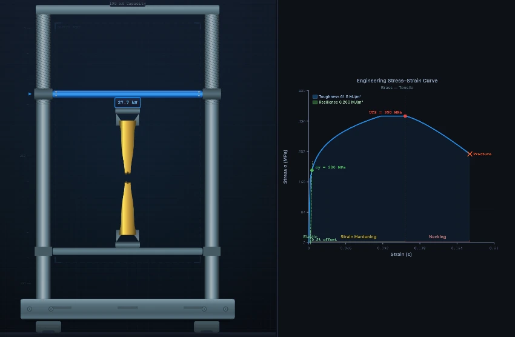

UTM Virtual Lab
3D Model — UTM Virtual Lab
Free online UTM testing simulator. Run tensile and compression tests on 20 materials with real-time stress-strain curves and specimen deformation. Try free!
Universal Testing Machine — Tensile & Compression Material Testing Simulator
1 Overview
The UTM Virtual Lab is a fully interactive Universal Testing Machine simulator that lets you perform virtual tensile and compression tests on engineering materials. In a real laboratory, a UTM applies controlled loads to a standardized specimen using a movable crosshead, while a load cell and extensometer record force and deformation data. This simulator faithfully reproduces that entire workflow, from specimen mounting through fracture, generating real-time stress-strain curves and calculating all key mechanical properties.
The simulator includes 20 built-in materials spanning ductile metals, alloys, polymers, and brittle ceramics — mild steel, aluminium 6061-T6, cast iron, copper, brass, high-carbon steel, rubber, glass, stainless steel 304, Ti-6Al-4V, alloy steel 4340, Inconel 718, magnesium AZ31B, nickel, lead, nylon 66, polycarbonate, acrylic (PMMA), alumina (Al₂O₃), and concrete — plus a "+ Custom" material builder that lets you enter your own material properties (Young's modulus, yield strength, UTS, fracture strain, Poisson's ratio, and density) with full validation. Each material responds with its own characteristic stress-strain behavior. You can choose between tensile and compression test modes, adjust specimen dimensions using precise stepper inputs, and control the crosshead speed. A built-in SI / Imperial unit toggle switches all values between metric (MPa, mm, kN) and US customary units (psi, in, kip). After testing, export results as CSV or save the graph as PNG (with watermark). A fracture sound effect plays when the specimen breaks.
2 Setting Up the Load Case
When you first load the simulator, you are in Simulate mode with the UTM machine canvas on the left and the stress-strain graph on the right. Below the graph you will find the action bar (Mount, Start, Reset, Tensile/Compression toggle, CSV, PNG) and the controls panel (material selection, specimen dimensions, speed). The lab procedure steps at the top guide you through the correct testing sequence.
To begin a test: (1) Select a material from the pill buttons — or click "+ Custom" to define your own material with custom properties. (2) Adjust the specimen diameter and gauge length using the [−] [value] [+] stepper controls or the sliders. (3) Choose Tensile or Compression from the action bar. (4) Set the crosshead speed. (5) Click "Mount" to load the specimen into the grips. (6) Click "Start" to begin applying load. The machine animation, digital readout, and stress-strain curve update in real time. When the specimen fractures, you will hear a breaking sound effect. The results panel then shows all eight mechanical properties.
Unit Toggle: Click "SI" or "Imperial" in the top bar. All values — machine readout, graph axes, badges, readout cards, stepper labels, exported data, and the custom material form — update instantly.
Right-click menu: Right-click the graph canvas to copy the stress/strain value at cursor, save graph as PNG, export CSV, toggle grid lines, or reset the test.
Keyboard shortcuts: 1–4 switch modes, Space mount or start, R reset.
3 Building the Diagrams
Simulate mode is the core experience. The left canvas shows the UTM machine with animated crosshead, specimen deformation, a digital readout panel (Load, Extension, Stress, Speed), status LEDs (PWR, TEST, ALRM), and a test status panel showing the current phase, material, specimen dimensions, and test mode. During a tensile test, you will see the specimen elongate, neck down, and fracture with a breaking sound. During compression, ductile specimens barrel while brittle materials (cast iron, glass) develop shear fracture planes.
The right canvas displays the stress-strain curve in real time with annotated yield point, UTS, and fracture markers. The action bar below the graph gives quick access to Mount, Start, Reset, Tensile/Compression toggle, and export buttons — no scrolling needed. Right-click the graph to copy values, toggle grid lines, or export. After the test, eight result cards appear: Young's modulus, yield strength, UTS, elongation, reduction in area, toughness, resilience, and fracture load.
4 Reading the Theory
Explore mode provides an illustrated reference library of UTM-related concepts organized into four categories: UTM Components, Test Standards, Material Properties, and Failure Modes. Click any category tab to browse a grid of concept cards. Select a card to view a detailed description, formula (where applicable), and a worked numerical example on the right side. The canvas displays an annotated diagram for each concept.
Use Explore mode to study individual topics such as how a load cell works, what ASTM E8 specifies for tensile specimens, how to calculate Young's modulus from a stress-strain curve, or what cup-and-cone fracture looks like compared to brittle cleavage. This mode is excellent for exam revision and building your understanding of each concept before attempting practice problems.
5 Try a Problem
Practice mode generates random calculation problems based on UTM testing concepts. Each problem presents given values (such as applied load, specimen diameter, and gauge length) and asks you to calculate a specific property like engineering stress, strain, or Young's modulus. Type your numerical answer and click "Check." If correct, the score increments. If incorrect, click "Show Solution" to see a detailed step-by-step walkthrough of the calculation. Click "Next" for a new problem. Your running score is displayed at the bottom.
Quiz mode tests your knowledge with a series of five multiple-choice and numerical questions per session. Each question covers theory, identification, or calculation topics related to tensile and compression testing, stress-strain curves, and material properties. After answering all five questions, you receive a score summary with star rating, correct/incorrect breakdown, and the option to start a new quiz. Use this mode to test your readiness before exams.
6 Design Notes
- Start with mild steel in tensile mode to see a complete stress-strain curve with distinct elastic region, yield point, strain hardening, necking, and fracture.
- Compare ductile and brittle materials (e.g., mild steel vs. cast iron) to understand why some materials show large plastic deformation while others fracture suddenly.
- Use the diameter slider to observe how cross-sectional area affects the calculated stress at the same applied load.
- Switch between tensile and compression modes to see the different deformation mechanisms: necking in tension vs. barreling in compression.
- After each test, review all eight result values and try to verify them using the formulas from Explore mode.
- In Practice mode, attempt problems without looking at the solution first. If stuck, review the relevant concept in Explore mode, then return to try again.
- Use the stress-strain curve markings to identify key regions: proportional limit, elastic limit, yield point, strain hardening region, UTS, necking region, and fracture point.
- Toggle to Imperial units to see how the same material properties are reported in psi, kip, and inches — useful for students studying ASTM standards used in the US.
- After a test, click "CSV" in the action bar to download the full stress-strain data for Excel or MATLAB. Click "PNG" to save the graph image (with mechsimulator.com watermark) for your lab report.
- Use the [−] [+] stepper buttons for precise diameter and gauge length entry, or type an exact value directly into the input field.
- Click "+ Custom" in the material row to define your own material. Enter Young's modulus, yield strength, UTS, fracture strain, Poisson's ratio, and density. The simulator auto-detects the material type (ductile, brittle, or hyperelastic) and generates a realistic stress-strain curve. Values are validated against engineering ranges.
- Try testing glass — a classic brittle material. In tension it fractures at just 50 MPa, but in compression it withstands 500 MPa (10× stronger). Compare this with mild steel to understand ductile vs. brittle behavior.
- Right-click the stress-strain graph to copy the exact stress/strain value at any cursor position, toggle the grid, or quickly export data.
Universal Testing Machine (UTM) Virtual Laboratory

A Universal Testing Machine (UTM) applies controlled tensile or compressive forces to a specimen while measuring deformation, producing a stress-strain curve. From this curve, engineers extract Young’s modulus, yield strength, ultimate tensile strength, percentage elongation, and percentage reduction in area — the five key mechanical properties for material selection and structural design.
The Universal Testing Machine (UTM) is the cornerstone of any materials testing laboratory. Also known as a tensile testing machine, it applies controlled tensile or compressive forces to standardized specimens while precisely measuring the resulting deformation. This virtual UTM simulator provides an authentic laboratory experience, allowing engineering students to understand material behavior without access to expensive physical equipment.
How Does a UTM Work?
A UTM consists of a rigid load frame with two vertical columns supporting a movable crosshead. The specimen is gripped between upper and lower jaws. During a tensile test, the crosshead moves upward at a controlled rate, stretching the specimen. A sensitive load cell measures the applied force, while an extensometer tracks the elongation. The machine plots a real-time stress-strain curve, revealing critical material properties including Young's modulus, yield strength, ultimate tensile strength (UTS), and ductility.
Tensile vs Compression Testing
In a tensile test (ASTM E8/E8M), the specimen elongates until fracture. Ductile materials like mild steel show distinct yield points, strain hardening, necking, and cup-cone fractures. Brittle materials like cast iron fracture suddenly with minimal plastic deformation. In compression testing (ASTM E9), the crosshead moves downward, compressing the specimen. Ductile materials exhibit barreling, where the midsection bulges outward due to friction at the platens.
Key Material Properties Measured
From the stress-strain curve, engineers extract Young's modulus (E) from the linear elastic slope, yield strength (σy) at the onset of plastic deformation, UTS (σu) at the maximum stress point, percent elongation (%EL) for ductility, percent reduction in area (%RA), modulus of resilience (area under elastic region), and modulus of toughness (total area under the curve). These properties are essential for structural design, material selection, and quality control in manufacturing.
Why Specimen Geometry Is Standardised — The ASTM E8 Tab
The dog-bone shape of a tensile specimen is not arbitrary. The reduced gauge section (the narrow middle) ensures that fracture happens in a known location, where the extensometer measures strain. The larger ends (the “tabs”) give the grips something to clamp without crushing the specimen or causing it to fail at the grip. ASTM E8/E8M specifies the geometry to the millimetre: gauge length 50 mm, gauge diameter 12.5 mm, total length 200 mm for a standard round specimen. Get the geometry wrong and the test result is invalid — failures at the grip are usually thrown out and the test repeated.
Where Real UTM Operators Make Mistakes
- Misaligned grips. Even 1° of grip misalignment introduces bending stress on top of tension, lowering the measured yield by 5−10 %. Self-aligning grips were invented to solve this; older machines need careful manual centring.
- Strain rate too high. ASTM E8 limits crosshead speed to specific ranges. Faster tests give higher apparent yield (steel is strain-rate sensitive). Tested too fast at one lab and slow at another, you get different numbers from the same material.
- Slipping in the grips. If the specimen pulls out before fracture, the elongation measurement is wrong. Knurled grip faces and proper preload prevent this.
- Reading UTS at the wrong point. UTS is the peak of the engineering stress-strain curve, not the fracture point. Necking starts at UTS; the stress drops as cross-section reduces, but the true stress (load/instantaneous area) keeps rising. Engineering vs true stress confuses many beginners.
Standards Worth Citing on Lab Reports
- ASTM E8/E8M-22 — Standard Test Methods for Tension Testing of Metallic Materials.
- ISO 6892-1:2019 — Metallic materials — Tensile testing — Part 1: Method of test at room temperature.
- ASTM E9 — Standard Test Methods of Compression Testing.
- ASTM E290 — Standard Test Methods for Bend Testing.
Typical Material Properties — UTM Test Data
| Material | Young's Modulus (GPa) | Yield Strength (MPa) | UTS (MPa) | Elongation (%) |
|---|---|---|---|---|
| Mild Steel (AISI 1018) | 200 | 250 | 440 | 25 |
| Stainless Steel (304) | 193 | 215 | 505 | 40 |
| Aluminium 6061-T6 | 69 | 276 | 310 | 12 |
| Copper (annealed) | 117 | 70 | 220 | 45 |
| Cast Iron (grey) | 100 | — | 200 | < 1 |
| Brass (C26000) | 110 | 125 | 325 | 53 |
| Nylon 6/6 | 2.8 | 70 | 85 | 60 |
| Glass (soda-lime) | 70 | — | 50 | < 0.1 |
UTM Testing Formulas
| Property | Formula | Description |
|---|---|---|
| Engineering Stress | σ = F / A0 | Force divided by original cross-section area |
| Engineering Strain | ε = ΔL / L0 | Change in length divided by original gauge length |
| Young's Modulus | E = σ / ε | Slope of the linear elastic region |
| Percentage Elongation | %EL = (ΔL / L0) × 100 | Ductility measure at fracture |
| Percentage Reduction in Area | %RA = (A0 − Af) / A0 × 100 | Necking measure at fracture |
Explore Related Simulators
If you found this Universal Testing Machine simulator helpful, explore our Stress–Strain Curve simulator, Impact Testing simulator, Hardness Testing simulator, and Hooke’s Law simulator, and the Sheet Metal Bend Radius Calculator (where tensile ductility sets the minimum bend radius) for more hands-on practice.